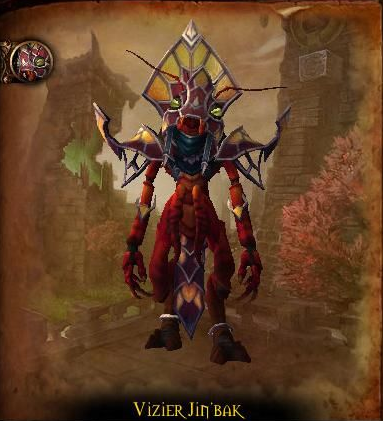
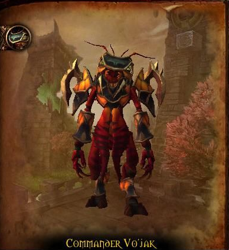

Vizier Jin’bak
HP: 843.100
- Sap Puddle
- Sap Resuide
- Summon Sap Globule
- Detonate
Tactics
Meg kell ölni a Globules-eket, mielőtt elérik a a tűz tócsát.
Meg kell ölni a Globules-eket, mielőtt elérik a a tűz tócsát.
50% hpnál Bloody Rage-t kap a boss, 50%-kal gyorsabban és 25%-kal többet fog sebezni, ezt ki kell healelni.

Commander Vo'jak
HP: 675.450
- Caustic Tar
- Sik'thik Swarmer
- Bombard
- Sik'thik Amberwing
- Rising Speed
- Thousand Blades
Tactics
1. Fázis
El kell kerülni a bombákat.
Használni kell a Caustic Tar-t az addok lassítására.
2. Fázis
Használni kell a Caustic Tar-t arra, hogy leszedjük a bossról a buffot.
El kell állni amikor pörög a boss.
Dashing Strike rengeteg dmg-t okoz.
Wing Leader Ner'onok
HP: 675.450
- Hurl Brick
- Caustic Pitch
- Quick-Dry-Resin
- Gusting Winds
Tactics
Hogyha Quick-Dry Resin van rajtad, akkor ugrálnod kell, hogy leessen rólad.
Mikor átrepül egy másik hídra, be kell szakítani a Gusting Winds nevű képességét és így megakadályozzuk a mozgásban.